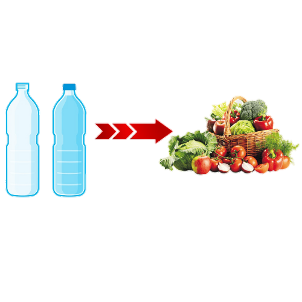

FEIRA DO BEM ESCOLAR

O projeto agrinho é um trabalho realizado nas escolas do Paraná, com pequenos projetos e ideias que podem beneficiar tanto os agricultores, como a população, vindo de alunos da escola publica. E aqui eu irei apresentar minha ideia a vocês.